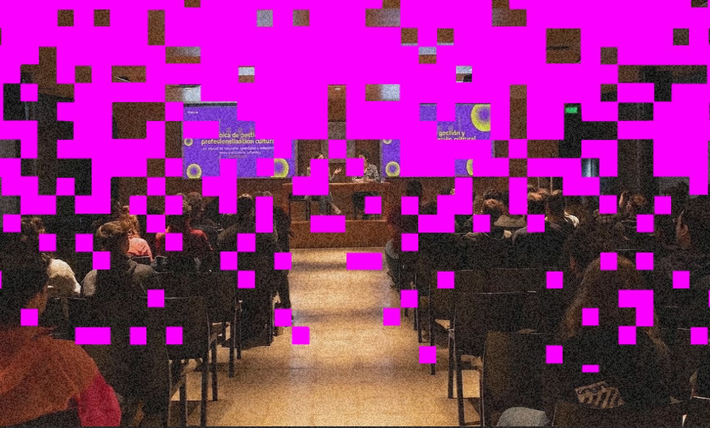

Grilla Lab
Grilla Lab es un espacio de formación, profesionalización y articulación dentro del ecosistema creativo. Concebido como un punto de encuentro y aprendizaje continuo para productores culturales, ofrece un entorno de intercambio directo centrado en el desarrollo de herramientas clave.
A través de clínicas de trabajo para el uso eficiente de la plataforma, estrategias para la carga de eventos y paneles de transferencia de experiencias entre pares, brindamos recursos prácticos para fortalecer la producción cultural. Asimismo, impulsamos mesas de diálogo junto a agentes gubernamentales para abordar aspectos normativos y la habilitación de espacios.
